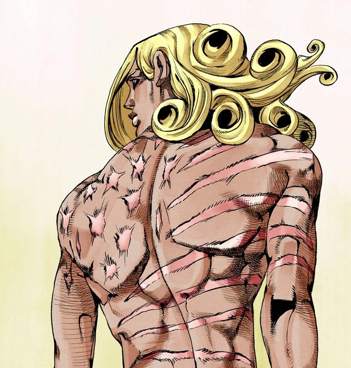

Клюканова Диана Александровна
Фанни Валентайн
 Предположим, что вы сидите за этим столом. Салфетки перед вами, какую салфетку вы бы взяли? Ту, что слева от тебя? Или ту, который находится справа? Ту, что на левой стороне? Или ту, что на правой стороне? Обычно вы выбираете ту, что слева. Это тоже «правильно». Но в более широком, "Общественном" смысле это неправильно. Возможно, я мог бы даже заменить «Общество» на «Вселенную». Правильный ответ таков: «Это определяется тем, кто первым берет свою салфетку». Да? Если первый берет салфетку справа от себя, то у других нет другого выбора, кроме как взять «правую» салфетку. То же самое касается левой. Все остальные возьмут салфетку слева от себя, потому что другого выхода у них нет. Это «общество»... Кто определяет цену земли в первую очередь? Должно быть, кто-то определил ценность денег. Размер рельсов на железнодорожной трассе? Магнитуду электричества? Законы и правила? Кто первым определил эти вещи? Мы все это сделали, потому что это республика? Или это было произвольно? НЕТ! Тот, кто первым взял салфетку, определил все это! Правила этого мира определяются тем же принципом «вправо или влево?»! В обществе, подобном этому столу, в состоянии равновесия, когда кто-то делает первый ход, все должны следовать! В любой эпохе этот Мир работал по этому принципу. И тот, кто «берет салфетку первым», должен быть тем, кого все уважают. Это не значит, что кто-то может выполнить эту роль... Те, кто деспотичны или недостойны, будут презираемы. И это «неудачники». В случае с этой таблицей, «старший» или «хозяин партии» сначала возьмут салфетку... Потому что все «уважают» этих людей.
Факты
|
Доброе пожаловать в нашу семью!